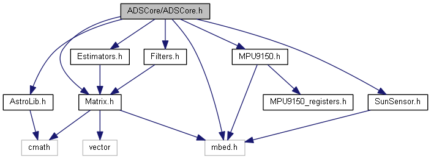

- Generated by
 1.8.15
1.8.15
|
CubeSat Atitude Determination
|
Developed by Remy Chatel for the University of Glasgow in the context of a MSc in Electrical and Electronical Engineering.
The attitude of a rigid body regarding a reference describes the rotation required to rotate the body from pointing at the reference to its current position. It is its orientation in space relative to a reference coordinate system.
The knowledge of the attitude is important for a spacecraft as it indicates where the spacecraft is looking at (on Earth for instance), and allow the precise pointing of instruments and antennas.
The attitude determination process is the following: measurement, estimation and filtering. It takes as input inertial data (such as angular rates from gyroscope) and external reference objects data (such as Sun or stars position, or magnetic field).
The output is the rotation required to go from a reference frame to the body frame of the spacecraft. There are different possible ways to represent rotation, but usually, the output is a 7-elements state vector containing the rotation quaternion and the angular rates.
This project developed an inexpensive Attitude Determination System for CubeSat using a Sun sensor (made of three photodiodes) and an IMU as sensors. The data is then processed by a QuEst algorithm and filtered using a quaternion-based 7-state Kalman filter.
This project was done on the Nucleo32-L432KC board, but can work just as well on most other Nucleo board provided they have enough memory space (6kB of RAM and 68kB of Flash).
Once all the components are sourced and connected, the inertia model of the system (CubeSat) must be known for the Kalman Filter. Also, some knowledge of the variance of the sensor can help start the filter.
Then, all information can be written in the ADSCore.test.cpp file and compiled. The output is read in the USB Serial console.
If changes are required to the models or to the sensors, see documentation to find out where the changes have to take place. The system was thought to be as modular as possible.
This project uses several modules to breakdown the task, the list of those modules and their documentation can be found in the Modules section
This project needs <std::cmath>, <std::vector> and the ARM Mbed (https://www.mbed.com/en/) framework to work properly. However, changing away from Mbed to make it work on other platforms should not be too difficult as only the IMU and SunSensor have to be changed to interface with the hardware (I2C and analogue inputs).
Porting the code to Arduino should not be too much of an issue. However, the absence of Floating Point Unit and the fact that most Arduinos are based on 8-bit processors mean that the code may run very slowly.
1.8.15